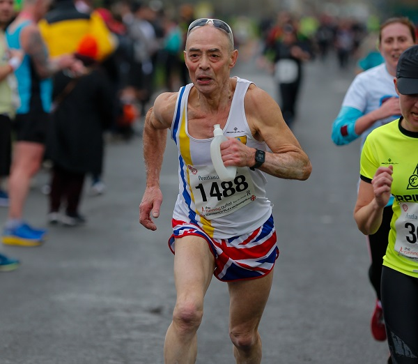

Two Sevenoaks AC athletes contested the Staplehurst "End-of-Year"(!) 10 Mile

race on Sunday 25th April.
Laura Andrade finished 70th (4th W35) in 1hr 18mins 28secs, while Lionel Stielow won the M70 category in 1hr 44mins 25secs (173rd overall).
The full results are here.
The next edition of the race is scheduled for 27th December.